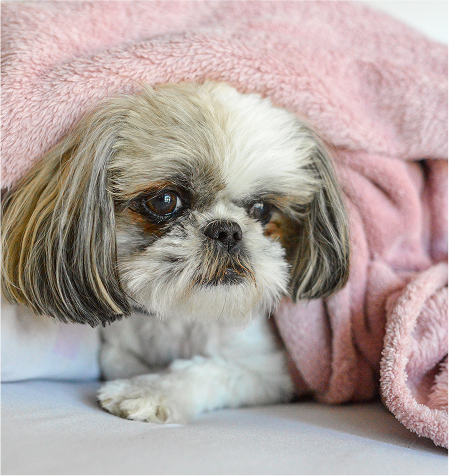
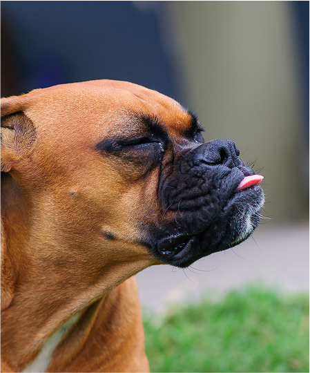
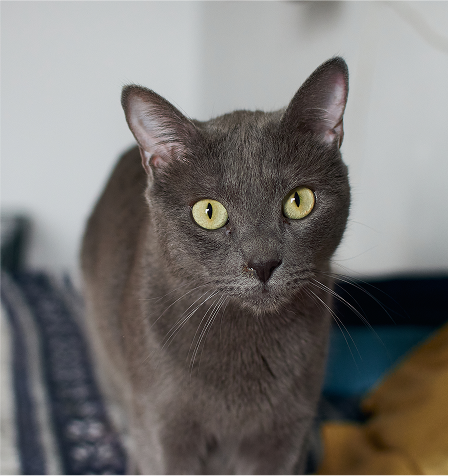

<!DOCTYPE html>
<html lang="en">
  <head>
    <!-- This area is for instructions dor the browser and not the user -->
    <meta charset="utf-8" />
    <title>Default-Template</title>
    <meta name="viewport" content="width=device-width, initial-scale=1" />
    <script
      src="https://kit.fontawesome.com/580b1ba76a.js"
      crossorigin="anonymous"
    ></script>
    <link rel="stylesheet" href="css/main.css" />
    <link rel="preconnect" href="https://fonts.googleapis.com" />
    <link rel="preconnect" href="https://fonts.gstatic.com" crossorigin />
    <link
      href="https://fonts.googleapis.com/css2?family=Bagel+Fat+One&family=Bebas+Neue&family=Chivo:ital,wght@0,100..900;1,100..900&family=Poppins:ital,wght@0,100;0,200;0,300;0,400;0,500;0,600;0,700;0,800;0,900;1,100;1,200;1,300;1,400;1,500;1,600;1,700;1,800;1,900&display=swap"
      rel="stylesheet"
    />
  </head>
</html>

<body>
  <header>
    <a class="home-logo" href="index.html">
      
    </a>

    <nav>
      <ul class="top-nav">
        <a href="index.html">Home</a>
        <a href="aboutus.html">About Us</a>
        <a href="ouranimals.html">Our Animals</a>
        <a href="support.html">Support</a>
        <a href="mainblog.html">Blog</a>
        <a href="report.html">Report & Contacts</a>
      </ul>
    </nav>
  </header>

  <section class="hero-with-side-text">
    <div class="hero-side-text">
      <h1>Find Your New Best Friend</h1>
      <p>
        Meet the loving cats and dogs waiting for their forever homes. Browse
        their stories, learn about their personalities, and find the perfect
        match for your family.
      </p>
      <div>
        <a class="red-button" href="#">Adopt Today</a>
      </div>
    </div>
    <div>
      
    </div>
  </section>

  <section class="middle-align-section green-background">
    <div class="middle-align-text">
      <h2>Meet Our Adoptable Animals</h2>
      <p>
        Scroll through our current residents and see who’s ready to become part
        of your family.
      </p>
      <a>See All</a>
    </div>
    <div class="three-column">
      <i class="fa-solid fa-chevron-left"></i>
      <div class="two-row-column">
        <div class="small-middle-align">
          

          <h3>Cece</h3>

          <div class="small-two-column">
            <div>Age: 5<br />Breed: Ragdoll<br />Gender: Female</div>

            <div>
              <a class="green-button" href="#">Learn More</a>
            </div>
          </div>
        </div>

        <div class="small-middle-align">
          

          <h3>Henry</h3>

          <div class="small-two-column">
            <div>Age: 9<br />Breed: Shih Tzu<br />Gender: Male</div>

            <div>
              <a class="green-button" href="#">Learn More</a>
            </div>
          </div>
        </div>
      </div>

      <div class="two-row-column">
        <div class="small-middle-align">
          

          <h3>Joyie</h3>

          <div class="small-two-column">
            <div>Age: 10<br />Breed: Labrador<br />Gender: Female</div>

            <div>
              <a class="green-button" href="#">Learn More</a>
            </div>
          </div>
        </div>

        <div class="small-middle-align">
          

          <h3>Davi</h3>

          <div class="small-two-column">
            <div>Age: 4<br />Breed: Boxer<br />Gender: Female</div>

            <div>
              <a class="green-button" href="#">Learn More</a>
            </div>
          </div>
        </div>
      </div>

      <div class="two-row-column">
        <div class="small-middle-align">
          

          <h3>Jamy</h3>

          <div class="small-two-column">
            <div>Age: 7<br />Breed: Shorthair<br />Gender: Female</div>

            <div>
              <a class="green-button" href="#">Learn More</a>
            </div>
          </div>
        </div>

        <div class="small-middle-align">
          

          <h3>Boba</h3>

          <div class="small-two-column">
            <div>Age: 12<br />Breed: Burmese<br />Gender: Female</div>

            <div>
              <a class="green-button" href="#">Learn More</a>
            </div>
          </div>
        </div>
      </div>
      <i class="fa-solid fa-chevron-right"></i>
    </div>
  </section>

  <section class="middle-align-section">
    <div class="middle-align-text">
      <h2>Success Rescue & Adoption Stories</h2>
      <p>
        Every animal we rescue has a story — moments of struggle, courage, and
        transformation.
      </p>
    </div>

    <div class="two-column">
      <div>
        
      </div>

      <div class="side-text">
        <h2>Milo’s Story: A Gentle Soul Looking for Love</h2>
        <p>
          Milo is a sweet Ragdoll who was found hiding under a neighbor’s porch,
          too shy and scared to come out. His fur was matted, and he was hungry
          and tired when we first rescued him. With gentle care and patience,
          Milo has slowly started to trust again.<br /><br />He loves curling up
          in warm laps and has the softest purr that can brighten any room. Milo
          is ready to find a loving family who will give him the patience and
          kindness he deserves.<br /><br />If you’re looking for a gentle
          companion to welcome into your home, Milo might just be the perfect
          match.
        </p>
        <div>
          <a class="red-button" href="#">Adopt Now</a>
        </div>
      </div>
    </div>
  </section>
</body>

<footer>
  <div class="footer-logo">
    
    <p>© 2025 Fos Animal Shelter. All rights reserved.</p>
  </div>

  <nav>
    <ul class="footer-nav">
      <h3>Navigation</h3>
      <a href="index.html">Home</a>
      <a href="aboutus.html">About Us</a>
      <a href="ouranimals.html">Our Animals</a>
      <a href="support.html">Support</a>
      <a href="blog.html">Blog</a>
      <a href="report.html">Report & Contacts</a>
    </ul>
  </nav>

  <div class="thin-side-text">
    <h3>KEEP UP WITH US</h3>
    <p>
      Address: 123 Paws Lane, Vancouver, BC<br />Email:
      hello@youranimalshelter.org <br />Phone: (123) 456-7890
    </p>
    <div class="social-icons">
      
      
      
    </div>
    <div>
      <a class="red-button" href="#">Support Us</a>
    </div>
  </div>
</footer>

<div id="demobox"></div>
